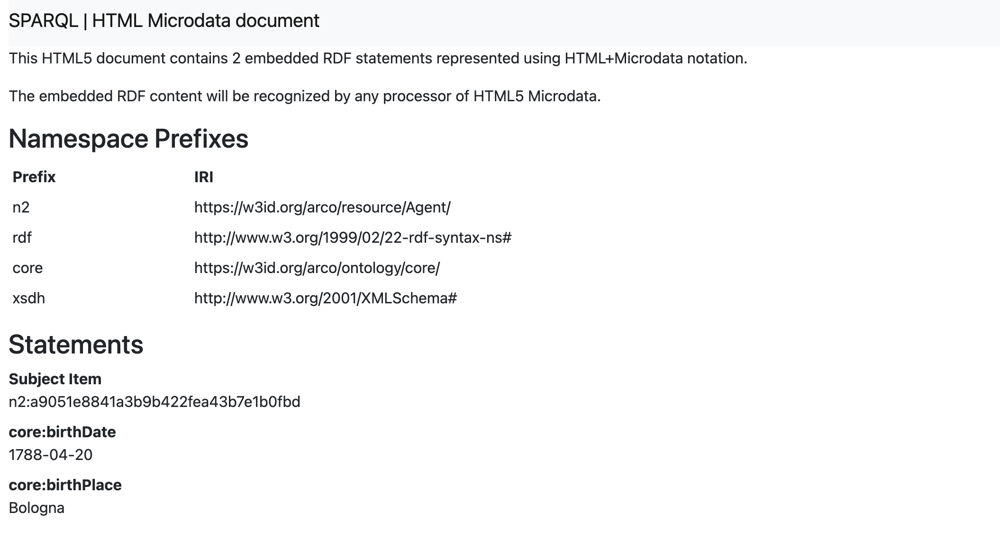

Mona Ambrosio, Marta Gallato, Martina Nicolosi, Abtin Safavipour, Lara Scallela, Mahsa Sotudeh
Members' InfoCarlotta Gargalli (1788-1840) was a talented neoclassical Bolognese painter in the Rome of Canova. She was the first woman to attend the Accademia di Belle Arti in Bologna at the end of the "Age of Enlightenment. Thanks to her talent and determination, She was able to assert herself in an artistic context that was almost entirely dominated by men at the time.
The aim of our choice was to dessiminate knowledge about an almost forgotten artistic figure of the city of Bologna, where our university is located to contribute to the knowledge of our community of UniBo students and residents of Bologna about the cultural heritage of their city and simultaneosly we aimed to fulfil the final assessment requirement of the Knowledge Engeneering for Humanities cousre via enriching the knowledge graph with information about a female artist from Bologna who is less known. We wanted to make the knowledge graph more complete by adding further biographical information and artworks about Carlotta Gargalli to it.
Our project follows the Enriching a Knowledge Graph track and focuses on Carlotta Gargalli, a 19th-century Bolognese painter represented in ArCo. The methodology combines SPARQL exploration, LLM-assisted information extraction, manual verification, and RDF triple design.
1. Selecting the Topic
We chose Carlotta Gargalli, a 19th-century Bolognese painter, because she is present in ArCo but appears to be documented less fully than her father, Filippo Gargalli. This made her a suitable case for a gap-based enrichment project.
2. Initial Exploration of ArCo
We used the ArCo SPARQL endpoint to search for existing data about Carlotta Gargalli. Since we did not initially know her Agent IRI, we first searched for cultural properties whose labels contained the word "Gargalli".
3. Finding the Agent IRI
After finding the painting Madonna con Bambino, we followed the authorship
relation a-cd:hasAuthor to identify Carlotta Gargalli's Agent IRI.
We verified the result by checking the agent's rdfs:label.
4. Building SPARQL Queries
We developed seven SPARQL queries using key SPARQL features such as
DISTINCT, FILTER, REGEX,
UNION, OPTIONAL, ORDER BY,
LIMIT, SAMPLE, and GROUP BY.
These queries helped us move from a general search to a more precise analysis of
authorship, agent data, and missing information.
5. Analyzing the Query Results
We examined the query outputs to understand what ArCo already contains. The results showed that Carlotta Gargalli is linked to one work in ArCo, while Filippo Gargalli is linked to four works. The queries also showed that Carlotta's record lacks precise biographical information and does not explicitly represent her family relationship with Filippo.
6. Identifying Knowledge Gaps
From the SPARQL results, we identified the main gaps to be enriched: Carlotta's missing birth date and birthplace, the missing father-daughter relationship between Carlotta and Filippo Gargalli, and the limited representation of other works attributed to Carlotta.
7. Prompt Engineering for LLMs
We used three prompting strategies with three LLMs: ChatGPT, Claude, and Gemini. We first used these strategies to collect and compare information about Carlotta Gargalli's most important paintings, including a zero-shot prompt, a few-shot catalog-style prompt, and a chain-of-thought prompt focused on her artistic phases.
8. Generating RDF Enrichment
We then created a second set of targeted prompts asking the three LLMs to generate SPARQL CONSTRUCT queries. These prompts focused on the identified gaps: Carlotta's birth information, her relationship with Filippo Gargalli, and authorship information for her additional works.
9. Comparing LLM Outputs
We compared the outputs from ChatGPT, Claude, and Gemini to evaluate their accuracy, structure, and usefulness for RDF enrichment, checking whether the models used the correct IRIs, valid SPARQL syntax, and appropriate predicates, and whether they avoided inventing new resources.
10. Manual Verification
The LLM outputs were not accepted automatically. We manually checked the proposed triples and CONSTRUCT queries against the SPARQL evidence, historical sources, and the structure of ArCo. Incorrect facts, invalid syntax, and unsupported IRIs were corrected or discarded.
11. RDF Triple Design
We selected the best validated outputs and transformed them into final proposed RDF triples, designed to enrich ArCo with Carlotta Gargalli's birth information, her family relationship with Filippo Gargalli, and additional authorship-related information.
12. Website Creation
We created a project website to present the topic, methodology, SPARQL queries, prompts, LLM comparison, RDF triples, challenges, and conclusions in a clear and accessible way.
13. Publishing Online
The final website was prepared for publication through GitHub Pages, making the project available as an open educational resource and allowing others to evaluate our findings.
Explanation 1
We started with this query to get general information about Carlotta Gargalli in ArCo.
We wanted to see how many Historic or Artistic Properties existed in ArCo for her, so
we used FILTER and REGEX to search for "Gargalli".
We limited the results to 50 with LIMIT 50.
We used DISTINCT to remove duplicate rows caused by bilingual labels on
the same resource. The results revealed the presence of another agent, Filippo Gargalli,
who we later identified through our LLM prompts that he is her father. This first query already
shows an imbalance: Carlotta has a single catalogued work, while Filippo has four.
This was the starting point of our investigation.
Explanation 2
We wanted to get information about the artistic properties of Carlotta and Filippo Gargalli.
We used UNION to combine two graph patterns and used SELECT *
to explore what information was available without committing to specific columns yet.
With this more specific query, we confirmed that Carlotta has a single catalogued work, while Filippo has four. By looking at these artistic properties, we also found the Agent IRIs for both of them in ArCo.
Explanation 3
We used UNION to retrieve works authored by either Carlotta Gargalli or
Filippo Gargalli in a single query. We combined it with DISTINCT to avoid
exact duplicate rows in the result table.
Information about each artwork is provided both in English and in Italian, and since ArCo
stores multilingual and repeated labels, DISTINCT alone was not enough to
produce a fully clean table. This motivated the language filtering we introduced in Query 4.
Explanation 4
Since we already knew Filippo Gargalli was present in ArCo, we wanted a cleaner comparison
between him and Carlotta. We used DISTINCT and UNION to get
information about both of their artistic works without duplicate rows.
We used FILTER(LANG(?title) = "it" || LANG(?title) = "") to only get results in Italian
and eliminate English duplicates. We also used SAMPLE and
GROUP BY: GROUP BY collects repeated results into groups, and
SAMPLE() chooses one value from each group, so the final table is cleaner.
With this query, we confirmed that the information on artworks for Carlotta and Filippo Gargalli is unequal: one work for Carlotta versus four for Filippo. This becomes the starting point for our enrichment proposal, especially because Carlotta's biographical and family data are also missing or vaguely represented.
Explanation 5
We used FILTER(REGEX(...)) with "authorship", "attribution" and
"attribuzione" to look for ArCo classes related to artistic attribution.
We used ORDER BY ASC to get the results in ascending order.
We also used LIMIT 50 because owl:Thing could in principle
match a very large number of resources. The query returns either no results, or only
the AuthorshipAttribution class.
Explanation 6
We used FILTER for the two agents, Carlotta and Filippo, to obtain
biographical data. We used FILTER(LANG(?label) = "it" || LANG(?label) = "")
to only get results in Italian and eliminate English duplicates, as learned
in Query 3.
We used DISTINCT as a final safeguard against any remaining duplicate rows.
We also used FILTER(?agent = ... || ?agent = ...) to restrict the query to
exactly our two agents, using their verified IRIs. This shows that ArCo's information
for Carlotta is extremely vague, which is why we used Query 7.
Explanation 7
We used OPTIONAL { ?agent bio:birthPlace ?birthPlace } as a gap detector:
if bio:birthPlace exists for an agent, its value is returned; if not, the row
is still returned with ?birthPlace unbound, meaning empty. The row is therefore
not eliminated.
We used DISTINCT to avoid duplicate rows, consistent with all previous queries.
This shows one of our gaps: both agents exist in ArCo, yet ArCo holds zero geographic-origin
information for either of them, despite external sources confirming Carlotta was born in
Bologna.
Comparison LLM Prompting Strategies accross Chat GPT, Claude and Gemini
Click on the following icon to access the Excel file containing the results of the LLM prompting strategies comparison across Chat GPT, Claude and Gemini. The file includes detailed information on the prompts used, the responses received from each model, and an analysis of their performance in relation to the identified gaps in the ArCo dataset.

Triple of the first missing information
Carlotta Gargalli – Biographical Enrichment
We wrote this prompt to Gemini in order to obtain the SPARQL CONSTRUCT query.
Task
Create a SPARQL CONSTRUCT query that generates proposed RDF triples for enriching ArCo with biographical data.
Important Context
- We are not directly modifying the public ArCo endpoint.
- The endpoint is used to verify the existing gap and to generate proposed enrichment triples.
- Do not use
INSERT DATA. - Use
CONSTRUCT, because it can be run on a SPARQL endpoint and returns RDF triples.
The Gap
ArCo contains Carlotta Gargalli as an agent, but it does not explicitly contain her personal biographical information. The missing information is her birthplace and birthdate.
Target Case — Carlotta Gargalli
- Subject IRI:
https://w3id.org/arco/resource/Agent/a9051e8841a3b9b422fea43b7e1b0fbd - Birthplace: Roma
- Birthdate: 1788-12-04
Requirements
- Use SPARQL
CONSTRUCT, notINSERT DATA. - Use
arco-core:birthDateandarco-core:birthPlace. - Verify that the ArCo agent exists by checking its
rdfs:label. - Do not invent new IRIs or create a new person resource.
Gemini's Result (Few-Shot Prompting)
PREFIX arco-core: <https://w3id.org/arco/ontology/core/>
PREFIX rdfs: <http://www.w3.org/2000/01/rdf-schema#>
CONSTRUCT {
<https://w3id.org/arco/resource/Agent/a9051e8841a3b9b422fea43b7e1b0fbd>
arco-core:birthDate "1788-04-20" ;
arco-core:birthPlace "Bologna" .
}
WHERE {
<https://w3id.org/arco/resource/Agent/a9051e8841a3b9b422fea43b7e1b0fbd>
rdfs:label ?agentLabel .
}
Triple of the second missing information
Carlotta Gargalli – Missing Artwork Authorship
We wrote the following prompt to Claude to get the query for the missing artworks.
Task
Create a SPARQL CONSTRUCT query that generates proposed RDF triples for enriching ArCo.
Important Context
- We are not directly modifying the public ArCo endpoint.
- The endpoint is used to verify the existing gap and to generate proposed enrichment triples.
- Do not use
INSERT DATA. - Use
CONSTRUCT, because it can be run on a SPARQL endpoint and returns RDF triples.
The Gap
ArCo only contains Madonna con bambino as an artwork made by Carlotta Gargalli. It does not show the other paintings: Ritratto della famiglia de' Bianchi, Pirro che minaccia di uccidere Astianatte, and Ritratto di ecclesiastico. The missing information is that these three paintings have Carlotta Gargalli as their author.
Target Case — Carlotta Gargalli
Create a SPARQL CONSTRUCT query for the following ArCo enrichment.
Information to model:
Madonna con bambino has author Carlotta Gargalli.
ArCo IRI for Carlotta Gargalli:
https://w3id.org/arco/resource/Agent/a9051e8841a3b9b422fea43b7e1b0fbd
Wikidata QIDs for the paintings:
wd:Q132129004— Ritratto della famiglia de' Bianchiwd:Q133269104— Pirro che minaccia di uccidere Astianattewd:Q137794454— Ritratto di ecclesiastico
Requirements
- Use SPARQL
CONSTRUCT, notINSERT DATA. - Use
a-cd:hasAuthorto express the authorship. - Use
rdfs:commentto explain that Filippo Gargalli was Carlotta’s father and first teacher. - In the
WHEREclause, verify the ArCo agent by checking itsrdfs:label. - Do not invent new IRIs.
- Do not create a new cultural property resource.
- Return only the SPARQL query.
Result of Claude
PREFIX agent: <https://w3id.org/arco/resource/Agent/>
PREFIX wd: <http://www.wikidata.org/entity/>
PREFIX a-cd: <https://w3id.org/arco/ontology/context-description/>
PREFIX rdfs: <http://www.w3.org/2000/01/rdf-schema#>
CONSTRUCT {
?culturalProperty
a-cd:hasAuthor
agent:a9051e8841a3b9b422fea43b7e1b0fbd .
}
WHERE {
VALUES ?culturalProperty {
wd:Q132129004
wd:Q133269104
wd:Q137794454
}
}Triple of the third missing information
Carlotta Gargalli – Family Relationship Enrichment
We asked Claude to generate a SPARQL query to add information about the relationship between Carlotta Gargalli and Filippo Gargalli.
Task
Create a SPARQL CONSTRUCT query that generates proposed RDF triples for enriching ArCo.
Important Context
- We are not directly modifying the public ArCo endpoint.
- The endpoint is used to verify the existing gap and to generate proposed enrichment triples.
- Do not use
INSERT DATA. - Use
CONSTRUCT, because it can be run on a SPARQL endpoint and returns RDF triples.
The Gap
ArCo contains both Carlotta Gargalli and Filippo Gargalli as agents, but it does not explicitly represent their family relationship. The missing information is that Carlotta Gargalli was the daughter of Filippo Gargalli, who was also her first teacher.
Target Case — Carlotta Gargalli
Information to model:
“Carlotta Gargalli was the daughter of Filippo Gargalli. Filippo Gargalli was also her first teacher.”
Carlotta Gargalli:
https://w3id.org/arco/resource/Agent/a9051e8841a3b9b422fea43b7e1b0fbd
Filippo Gargalli:
https://w3id.org/arco/resource/Agent/05ed006268780f01cc300b7140cd3885
Requirements
- Use SPARQL
CONSTRUCT, notINSERT DATA. - Use
bio:fatherto express the father-daughter relationship. - Use
rdfs:commentto explain that Filippo Gargalli was Carlotta’s father and first teacher. - Verify that both ArCo agents exist by checking their
rdfs:label. - Do not invent new IRIs.
- Do not create a new person resource.
- Return only the SPARQL query.
Result of Claude
PREFIX bio: <http://purl.org/vocab/bio/0.1/>
PREFIX rdfs: <http://www.w3.org/2000/01/rdf-schema#>
CONSTRUCT {
<https://w3id.org/arco/resource/Agent/a9051e8841a3b9b422fea43b7e1b0fbd>
bio:father
<https://w3id.org/arco/resource/Agent/05ed006268780f01cc300b7140cd3885> ;
rdfs:comment
"Carlotta Gargalli was the daughter of Filippo Gargalli, who was also her first teacher."@en .
}
WHERE {
<https://w3id.org/arco/resource/Agent/a9051e8841a3b9b422fea43b7e1b0fbd>
rdfs:label ?daughterLabel .
<https://w3id.org/arco/resource/Agent/05ed006268780f01cc300b7140cd3885>
rdfs:label ?fatherLabel .
}Carlotta Gargalli
and
ArCo Knowledge Graph Enrichment
Our research focused on Carlotta Gargalli, a lesser-known yet historically significant female artist from Bologna, who lived and worked during the 18th century and made history as the first woman to be admitted to the Academy of Fine Arts in Bologna. Despite her pioneering role in Italian art history, her legacy has remained underrepresented in digital cultural heritage resources.
Through our research, we have demonstrated that the ArCo knowledge graph presents notable gaps in its representation of Carlotta Gargalli, leaving key aspects of her life and work insufficiently documented. To address this, we have proposed a series of targeted enrichments in the form of RDF triples, covering essential biographical information (her birth date and birthplace) as well as structured data relating to her artworks.
These additions aim to make her profile more complete, accurate, and discoverable within the Semantic Web ecosystem, ultimately contributing to a broader effort to ensure that women artists of the past receive the visibility they deserve.